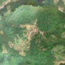
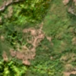

2,1 ha de pădure schimbată lângă Mărtinie
Între 20 august 2026 și 28 august 2026, pe aproximativ 2,1 ha de pădure din comuna Șugag, lângă Mărtinie, județul Alba, imaginile Sentinel-2 arată că vegetația a dispărut sau s-a schimbat puternic. E o schimbare care merită verificată.
Autorizația de tăiere
de confirmat pe poze
N-am găsit o autorizație care să acopere zona, dar nu putem spune ce s-a întâmplat aici: analistul AI fie n-a văzut încă pozele, fie le-a văzut și nu e sigur. Nu dăm roșu pe o bănuială, și nici nu spunem că e în regulă. Analistul înclină spre altceva decât o tăiere, dar nu e sigur. Printre astfel de zone au fost și tăieri reale.
Ce se vede în poze: În poza detaliată din 2020, zona marcată arată o gospodărie cu pajiști și copaci răzleți, nu o pădure deasă. În pozele «înainte» și «după» terenul are deja pământ deschis, deci nu se vede o tăiere nouă de pădure.


Înainte și după: Copernicus Sentinel-2, 10 m pe pixel, conturul zonei cu portocaliu. Poza detaliată (Esri World Imagery) e de acum 1–4 ani: arată ce era acolo înainte, nu tăierea.
Pe scurt
- Identificator
- 20260828_45786_23602
- Locul
- Mărtinie, comuna Șugag, județul Alba (SIRUTA 8014)
- Coordonate (centru)
- 45.78637, 23.60180 · Google Maps · OpenStreetMap
- Suprafața
- 2,1 ha (din pixeli de 10 m; ± câțiva pixeli pe margine)
- Ultima imagine cu pădurea întreagă
- 20 august 2026
- Prima imagine cu schimbarea
- 28 august 2026
- Imagini în care se vede schimbarea
- 9
- Cât de sigur e semnalul din satelit
- scăzută
- Terenul
- în afara amenajamentelor silvice publicate (pășune, mal de apă sau pădure privată fără amenajament în registru)
- Garda Forestieră
- Cluj
Dacă vrei să verifici sau să sesizezi
- Pădurile din județul Alba sunt în grija Gărzii Forestiere Cluj, care controlează tăierile și dă amenzile.
- Formularul Gărzii Forestiere Naționale primește sesizări și fără nume. Trimite linkul acestei pagini, coordonatele și pozele. Dacă tăierea e în desfășurare, sună la 112.
- Autorizațiile și transporturile de lemn se pot căuta în Inspectorul Pădurii.
Pagina arată ce se vede din satelit și ce scrie în registrul public; nu e o dovadă în sine.
Cum citezi zona
Linkul acestei pagini nu se schimbă. Dacă zona iese vreodată de pe hartă, pagina rămâne, cu data și cu ce știam despre ea.
Pădurea RO, zona 20260828_45786_23602: 2,1 ha, Mărtinie, comuna Șugag, județul Alba; schimbare văzută din satelit între 20 august 2026 și 28 august 2026. https://iliemihai.github.io/padurea-ro/zona/20260828_45786_23602/ (consultat la [data]). Date: CC BY 4.0.
Datele zonei: GeoJSON · toate zonele: date deschise · licența CC BY 4.0.
Istoricul zonei pe hartă
Starea se poate schimba când registrul publică o autorizație sau când analistul vede poze mai bune. O ținem aici, ca un link citat să arate și ce spuneam atunci.
Pe hartă cel târziu din 5 noiembrie 2026.
- 5 noiembrie 2026 – azi · de confirmat pe poze
Detalii tehnice, pentru verificare
De ce acest nivel de încredere:
- văzută schimbată în 9 imagini diferite
- AI-ul vede pădure dispărută
- în poza de dinainte zona era deja mai luminoasă decât pădurea din jur: luminiș, pajiște sau drum, nu pădure tăiată acum
Ce a văzut analistul cu context: Imaginea de înaltă rezoluție din 2020 arată clădiri cu acoperiș roșu, pajiști și coroane separate, înconjurate de pădure. În Sentinel-2, zona este deja brun-deschisă la 2026-08-20 și aproape identică la 2026-10-04, deci nu există o schimbare clară între date. Pete brune similare apar și în vederea largă, iar lipsa autorizațiilor și acoperirea WorldCover de 91% copaci nu compensează faptul că imaginea detaliată arată teren agricol sau de pășune cu gospodărie, nu pădure închisă.
- Placa Sentinel-2
- 34TFR
- NDVI de referință
- 0.77
- NBR de referință
- 0.51
- Scăderea în pădurea din jur
- 0.08
- Persistență
- 0.86
- NDVI / NBR după
- 0.441 / 0.189
- Analistul de zi (model)
- taiere · 0.85 · claude-haiku-5-5
- Analistul cu context (model)
- pasune · 0.45
Cum se calculează fiecare: metodologia.
Pune harta zonei într-un articol
Copiază codul în articol (merge în majoritatea site-urilor de știri). Sau pune doar linkul: WhatsApp, Facebook și X arată singure poza zonei.